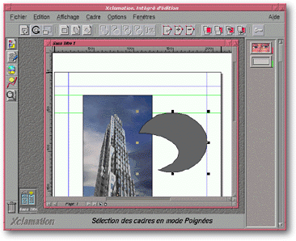
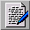
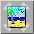

<!-- Documentation Xclamation (c)1994-2000 AXENE contact axene@axene.org>
<HTML>
<HEAD>
<TITLE>Interface g&eacute;n&eacute;rale</TITLE>
</HEAD>

<BODY BGCOLOR=#FFFFFF BACKGROUND="Images/back.gif" TEXT=#000000>
<P ALIGN=right>

<P>
<BR>
<BR>
L'interface principale est la fen&ecirc;tre la plus importante.
C'est &agrave; partir d'elle que se font toutes les op&eacute;rations sur les 
<A HREF="Document_Window.html">documents</A>.
<BR>
<BR>
<HR>
<BR>
<CENTER>

<BR>
<I><SMALL>
Photo d'&eacute;cran&nbsp;: Interface g&eacute;n&eacute;rale.
</I></SMALL>
</CENTER><P>
<BR>
<HR>
<BR>
<P>
<H3>L'interface principale est compos&eacute;e de haut en bas et de
gauche &agrave; droite&nbsp;:</H3>
<OL>
  <LI><A NAME="menu_bar">La <B>barre de menu d&eacute;roulant</B> comporte
     les menus d&eacute;roulants suivants&nbsp;:</A>
     <UL>
       <LI><A HREF="Menu_File.html">Menu <I>&quot;Fichier&quot;</I>.</A>
       <LI><A HREF="Menu_Edit.html">Menu <I>&quot;Edition&quot;</I>.</A>
       <LI><A HREF="Menu_View.html">Menu <I>&quot;Affichage&quot;</I>.</A>
       <LI><A HREF="Menu_Frame.html">Menu <I>&quot;Cadre&quot;</I>.</A>
       <LI><A HREF="Menu_Options.html">Menu <I>&quot;Options&quot;</I>.</A>
       <LI><A HREF="Menu_Window.html">Menu
	  <I>&quot;Fen&ecirc;tres&quot;</I>.</A>
       <LI><A HREF="Menu_Help.html">Menu <I>&quot;Aide&quot;</I>.</A>
     </UL>
     <P>
  <LI><A NAME="horizontal_icon_bar">
     La <B>barre horizontale d'ic&ocirc;nes</B>
     donne acc&egrave;s &agrave; des boutons ic&ocirc;nes qui permettent
     d'effectuer de nombreuses op&eacute;rations sur le document actif.
     Le contenu de cette barre est d&eacute;fini en fonction du bouton
     ic&ocirc;ne enfonc&eacute; de la barre verticale d'ic&ocirc;nes.
     </A><P>
  <LI><A NAME="vertical_icon_bar">
     La <B>barre verticale d'ic&ocirc;nes</B>
     contient deux s&eacute;ries de boutons ic&ocirc;nes. La premi&egrave;re
     s&eacute;rie contient des boutons qui permettent de faire varier
     la barre horizontale d'ic&ocirc;nes. La deuxi&egrave;me s&eacute;rie
     est compos&eacute;e uniquement de l'ic&ocirc;ne &quot;Poubelle&quot;.
     Voici la description de ces boutons ic&ocirc;nes&nbsp;:
     </A><P>
     <UL>
       <LI><A NAME="frame_icon_vbar">
	  
	  le premier bouton ic&ocirc;ne change
	  la barre horizontale d'ic&ocirc;nes en 
	  <A HREF="HBar_Frame.html">barre horizontale d'ic&ocirc;nes
	  'Cadre'</A>.
	  </A><P>
       <LI><A NAME="text_icon_vbar">
	  
	  le second bouton ic&ocirc;ne change la
	  barre horizontale d'ic&ocirc;nes en 
	  <A HREF="HBar_Text.html">barre horizontale d'ic&ocirc;nes
	  'Texte'</A>.
	  </A><P>
       <LI><A NAME="image_icon_vbar">
	  
	  le troisi&egrave;me bouton ic&ocirc;ne
	  change la barre horizontale d'ic&ocirc;nes en 
	  <A HREF="HBar_Image.html">barre horizontale d'ic&ocirc;nes
	  'Image'</A>.
	  </A><P>
       <LI><A NAME="vector_icon_vbar">
	  
	  le quatri&egrave;me bouton ic&ocirc;ne
	  change la barre horizontale d'ic&ocirc;nes en 
	  <A HREF="HBar_Vector.html">barre horizontale d'ic&ocirc;nes
	  'Dessin Vectoriel'</A>.
	  </A><P>
       <LI><A NAME="zoom_icon_vbar">
	  
	  le cinqui&egrave;me bouton ic&ocirc;ne
	  change la barre horizontale d'ic&ocirc;nes en 
	  <A HREF="HBar_Zoom.html">barre horizontale d'ic&ocirc;nes 'Zoom'</A>.
	  </A><P>
       <LI><A NAME="trash_icon_vbar">
	  
	  le dernier bouton ic&ocirc;ne est la
	  poubelle. Elle s'utilise en l&acirc;chant une s&eacute;lection
	  de cadre du document actif (voir 
	  <A HREF="Frame_Selection_Modes.html#move_frame">D&eacute;placement
	  de cadre</A>).
	  </A><P>
     </UL>

  <LI><A NAME="worktop">Le <B>plan de travail</B> contient les 
     <A HREF="Document_Window.html">documents</A>
     ouverts. Les documents peuvent rev&ecirc;tir trois formes&nbsp;:
     </A><P>
     <UL>
       <LI><A NAME="document_window">
	  Une fen&ecirc;tre normale qui peut
	  &ecirc;tre d&eacute;truite, d&eacute;plac&eacute;e et
	  redimensionn&eacute;e dans le plan de travail.
	  </A><P>
       <LI><A NAME="document_icon">
	  Un ic&ocirc;ne qui peut &ecirc;tre
	  d&eacute;plac&eacute; dans le plan de travail. Un double clic sur un
	  ic&ocirc;ne de document passe le document sous sa forme normale.
	  </A><P>
       <LI><A NAME="document_maximized">
	  Une fen&ecirc;tre maximale qui
	  remplit tout l'espace du plan de travail. Un clic sur le petit
	  bouton ic&ocirc;ne en haut &agrave; droite permet de passer le
	  document sous sa forme normale. Lorsque l'on ouvre le premier
	  document dans Xclamation, celui-ci est par d&eacute;faut en
	  fen&ecirc;tre maximale.
	  </A><P>
     </UL>

  <LI><A NAME="clipboard">Le <B>presse-papiers</B> permet de visualiser
     de fa&ccedil;on rapide et symbolique les objets qu'il contient.
     Il peut &ecirc;tre cach&eacute; et affich&eacute; &agrave;
     partir du 
     <A HREF="Menu_View.html#clipboard_menu_entry">menu
     <I>&quot;Affichage&quot;</I></A>
     (il est cach&eacute; par d&eacute;faut). Le presse-papiers est
     rempli par les fonctions 
     &quot;<A HREF="Menu_Edit.html"><I>Edition</I></A> / 
     <A HREF="Menu_Edit.html#cut_menu_entry"><I>Couper</I></A>&quot;
     et 
     &quot;<A HREF="Menu_Edit.html"><I>Edition</I></A> / 
     <A HREF="Menu_Edit.html#copy_menu_entry"><I>Copier</I></A>&quot;.
     </A><P>
  <LI><A NAME="hint_line">La <B>barre d'information</B> permet d'avoir
     une aide concise sur les boutons ic&ocirc;nes des barres d'Xclamation
     et affiche en permanence le mode d'action courant. Lorsque l'on
     d&eacute;place le curseur souris au-dessus d'un bouton ic&ocirc;ne,
     sa fonction principale appara&icirc;t dans la barre d'information.
     Celle-ci peut &ecirc;tre cach&eacute;e et affich&eacute;e &agrave; partir
     du <A HREF="Menu_View.html#hint_line_menu_entry">menu
     <I>&quot;Affichage&quot;</I></A> (elle est affich&eacute;e par
     d&eacute;faut). 
     </A><P>
</OL>
<BR>
<HR>
<P ALIGN=right>
<P>
</BODY>
</HTML>


